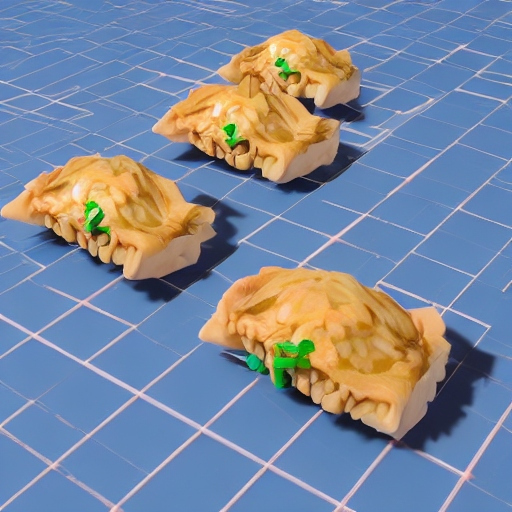

Go Back~
Gundam Gyoza

Description
These gyoza are inspired by the iconic mobile suits of the Gundam series.
Filled with a flavorful mixture of ingredients, they symbolize the
strength and unity of the characters as they pilot their giant robots and
protect the cosmos from various threats.
Ingredients
For the filling:
- 1/2 pound ground pork or chicken
- 1 cup finely chopped cabbage
- 1/2 cup chopped mushrooms (shiitake or buttom mushrooms)
- 1/4 cup finely chopped onions
- 2 cloves garlic, minced
- 1 tsp ginger, grated
- 2 tbsp soy sauce
- 1 tbsp seasame oil
- Salt and pepper to taste
Assembling:
- Gyoza wrappers
- Water (for sealing)
Cooking:
- Vegetable oil
- Dipping sauce (soy sauce, rice vinegar, seasame oil)
Instructions:
-
In a bowl, mix together the ground pork or chicken, chopped cabbage,
mushrooms, onions, garlic, and ginger.
-
Add soy sauce, sesame oil, salt, and pepper to the filling mixture. Mix
well to combine.
- Place a spoonful of the filling in the center of a gyoza wrapper.
-
Moisten the edges of the wrapper with water and fold it in half,
creating a half-moon shape. Pinch the edges to seal.
- Repeat the process with the remaining filling and wrappers.
-
Heat a skillet over medium heat and add a small amount of vegetable oil.
-
Place the gyoza in the skillet and cook until the bottoms are golden
brown.
-
Carefully add water to the skillet (enough to cover the bottom) and
cover with a lid. Steam the gyoza until the water evaporates.
-
Remove the lid and continue cooking until the bottoms are crispy again.
-
Serve the Gundam Gyoza with a dipping sauce, and enjoy these delicious
mecha-inspired dumplings!